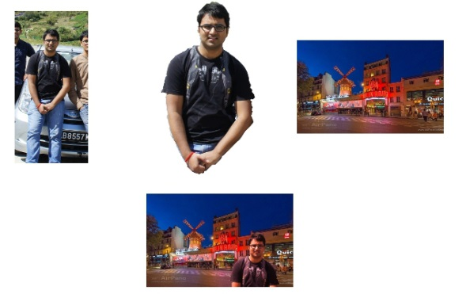

Magnetic Lasso
Acknowledgment
Intelligent Scissors demo is based on Mortensen et al. SIGGRAPH'95 paper. This project is a part of COMP-5421 (Computer Vision Course) at HKUST taught by Dr. C. K. Tang during the spring term (Feb-May'2014).
Objective
The objective of this project is to understand the algorithm beneath the magnetic lasso tool. Magnetic lasso tool is one of the common tools found in tools like Gimp, Adobe Photoshop etc. In this project we build a tool which allows a user to cut an object out of an image and paste it into another. References
[1] MORTENSEN,E., ANDBARRETT,W. "Intelligent scissors for image composition" Proc. ACM Siggraph'1995, 191-198 Download
• Source code of the project can be found here.